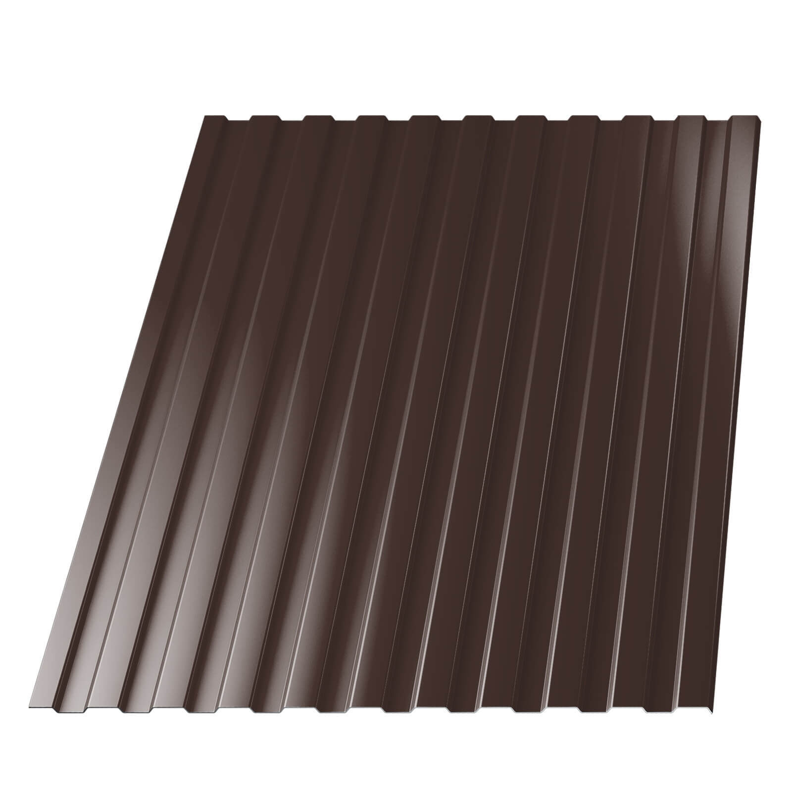
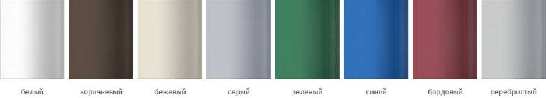
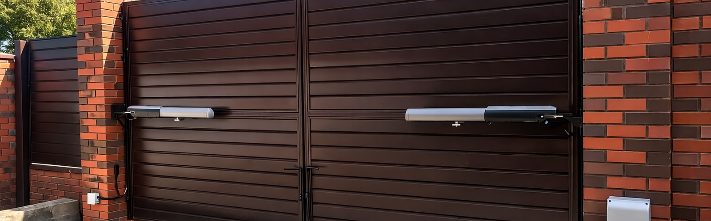

{kind=link}
{kind=link}
{kind=link}
{kind=link}
{kind=link}
{kind=link}
{kind=link}
{kind=link}
{kind=link}
{kind=link}
{kind=link}
{kind=link}
{kind=link}
{kind=link}
{kind=link}
{kind=link}
{kind=link}
{kind=link}
{kind=link}
{kind=link}
Привод для откатных ворот ALUTECH ROTEO RTO-500
Характеристики привода для ворот до 500 кг. Комплект ALUTECH ROTEO RTO-500 и фотографии привода с разных ракурсов.

Откатные (раздвижные) ворота — это тип въездных ворот, где цельное полотно сдвигается в сторону вдоль забора, экономя пространство перед въездом. Можно установить калитку в едином дизайне с воротами, чтобы въездная группа выглядела эстетично и гармонировала с участком.
Коротко о сроках, гарантиях и расчете стоимости
Стоимость зависит от размеров, заполнения, автоматики и комплекта фурнитуры. Рассчитаем под ключ.
Профнастил, металлический сайдинг, штакетник и жалюзи.
Сроки фиксируем в договоре. Обычно выполняем заказ в течение трёх недель, точные даты зависят от выбранной комплектации.
Гарантия на конструкцию — 1 год. На порошковую покраску — 6 месяцев. На автоматику — 2 года от завода-изготовителя.
Звоните или оставьте заявку — менеджер рассчитает стоимость под ключ.
Изготавливаем каркасы откатных ворот из профильной трубы с прочной внешней рамой, внутренней обрешеткой под обшивку и консольной частью с треугольным противовесом. Такая конструкция обеспечивает устойчивость створки, плавный ход и долгий срок службы всей системы.
Каркас подходит для дальнейшей обшивки профнастилом, штакетником, сэндвич-панелями и другими материалами. Все элементы продуманы для удобного монтажа и стабильной эксплуатации в любое время года.

Звоните или оставьте заявку — подберем каркас, фурнитуру и подготовим основу под нужную обшивку.
Распашные ворота — это классическая, надежная конструкция из двух створок на петлях, закрепленных к опорным столбам. Створки из металлического каркаса с разным заполнением открываются наружу или внутрь участка. Подходят для дач, частных домов и промышленных объектов, обеспечивая классический внешний вид и функциональность. Можно установить калитку в едином дизайне с воротами, чтобы въездная группа выглядела эстетично и гармонировала с участком. Индивидуальный размер. Порошковая покраска. Цвет на выбор. Управление — механическое или автоматическое (с пульта).


Звоните или оставьте заявку — менеджер рассчитает стоимость под ключ.
Калитка для дома за городом — элемент ограждения, который позволяет без проблем пройти на участок без необходимости открывать массивные ворота. Установка калитки для частного дома, оснащенной замком, — обеспечивает удобство перемещений и защиту от несанкционированных проникновений на территорию.
Сделаем калитку под ваши размеры и подберем заполнение в одном стиле с воротами и забором.

Профнастил (профлист) — универсален и экономичен, (обычно С8, С20, С21) используется для изготовления заборов, перегородок, ограждений, внутренней и внешней облицовки стен, в качестве кровельного покрытия небольших строений.
Профнастил С8 — профлист с высотой профиля 8 мм, рабочей шириной 1145 мм, общей шириной 1200 мм. Изготавливается из оцинкованной стали толщиной 0.4, 0.45, 0.5 мм. Существует три варианта покрытия: серая грунтовка, одностороннее и двухстороннее покрытие.
Материал. Тонколистовая оцинкованная сталь с полимерным защитно-декоративным покрытием, стойким к коррозии.
Конструкция. Металлические столбы (60x60 мм), поперечные лаги (40x20 мм) и профлисты, которые крепятся саморезами с резиновыми шайбами.
Преимущества. Высокая скорость монтажа, минимальный уход, сплошная защита, доступная цена, возможность установки высотой до 3 метров.
Монтаж. Включает разметку, бетонирование столбов (обычно через 2,5 м), приваривание лаг (2-3 ряда), крепление листов внахлест (на одну волну).
Подберем оттенок по RAL и фактуру под забор из профнастила.


Внимание! Текстура, рисунок и оттенок цвета на экране может отличаться от фактического из-за особенностей цветопередачи.
Подберем профиль, высоту ограждения и цвет под ваш участок, подготовим расчет с монтажом.
Металлосайдинг — это прочное, долговечное и эстетичное решение для ограждения участка. Аккуратные горизонтальные линии и современный вид. Хорошо сочетается с фасадом дома и воротами. Может быть представлен в любом цветовом решении, в гладкой и рельефной фактуре, что расширяет выбор заказчика.
Заборы из металлического сайдинга под дерево сочетают в себе эстетику дерева и долговечность металла, всегда выглядят красиво и современно.
Подберем оттенок по RAL и фактуру под забор из сайдинга.
Внимание! Текстура, рисунок и оттенок цвета на экране может отличаться от фактического из-за особенностей цветопередачи.
Подберем фактуру, цвет и схему монтажа, чтобы забор сочетался с фасадом дома и воротами.
Забор из металлоштакетника сочетает аккуратный ритм вертикальных планок, долговечность металла и более легкий внешний вид по сравнению со сплошными ограждениями. Подходит для частных домов, когда нужно современное и аккуратное решение для фасадной линии.


Подберем оттенок по RAL и фактуру под забор из металлоштакетника.
Внимание! Текстура, рисунок и оттенок цвета на экране может отличаться от фактического из-за особенностей цветопередачи.
Подберем высоту, шаг штакетин и цвет покрытия, чтобы ограждение смотрелось аккуратно и ровно.
Заборы жалюзи объединяют современный внешний вид, приватность и естественную вентиляцию участка. Ламели располагаются под углом, поэтому с улицы обзор ограничен, а сама конструкция остается легкой и аккуратной.


Подберем оттенок по RAL и фактуру под забор жалюзи.
Внимание! Текстура, рисунок и оттенок цвета на экране может отличаться от фактического из-за особенностей цветопередачи.
Подберем шаг ламелей, цвет и конструкцию под размеры участка и желаемый уровень приватности.
Секционные ворота — это надежная конструкция из сэндвич‑панелей, движущаяся по направляющим под потолок, что экономит место внутри и перед гаражом. Обеспечивают теплоизоляцию, защиту от взлома, оснащаются ручным или автоматическим приводом. Применение: гаражи, паркинги, автомойки, складские помещения. Управление — автоматическое (с пульта) или ручное.
Подберем серию ворот, тип механизма и привод под размеры проема и режим эксплуатации.
Рольворота и калитка в одном стиле, тип профиля 77М (вид с улицы). Калитка уличная с заполнением роллетным полотном (в одном стиле с рядом стоящими воротами), механический замок, ручка. Каркас изготовление из металлической трубы, покраска в полимерной покрасочной камере (порошковая).
Рольворота (рулонные ворота) — это компактная система для защиты гаражей, въездов во дворы и торговых площадей. Они работают по принципу рольставней: гибкое полотно при открытии сворачивается в рулон, который прячется в защитный короб над проемом.
Применение: гараж, навес, торговый павильон. Универсальность монтажа — можно ставить внакладку снаружи, внутри или непосредственно в проем. Цветовая палитра рольворот позволяет подобрать оптимальное решение для любого экстерьера.
Управление: ручное (пружинно-инерционный механизм) или автоматическое (электропривод с пультом).
Полотно рольворот может состоять из различного вида алюминиевых профилей:

Подберем профиль, способ управления и размер полотна под ваш проем и режим использования.
Рольставни (роллеты) — это защитные жалюзи в виде рулонного полотна, состоящего из ламелей, которые двигаются по направляющим и скручиваются в короб. Они устанавливаются на оконные/дверные проемы, ниши и витрины для защиты от взлома, шума, пыли, солнечного света и сохранения тепла, часто изготавливаются из алюминия.
Может быть ручным или электрическим (с пультом или выключателем).
Стандартные цвета рольставней.

Подберем тип профиля, способ управления и цвет под окна, двери, витрины или технические проемы.

Стандартная система автоматизации откатных ворот включает: электропривод с редуктором, встроенный или внешний блок управления, зубчатую рейку, пульт дистанционного управления и концевые выключатели. Для безопасности и удобства комплект обычно дополняют сигнальной лампой и фотоэлементами.
Привод подбирается не столько по ширине проема, сколько по нагрузке.
Вес створки (самый важный параметр). К весу ворот добавьте 30-50% на случай обледенения и снега зимой. Пример: если ворота весят 300 кг, привод нужно брать с расчетом на 500-600 кг.
Интенсивность использования. Для частного дома достаточно интенсивности 25-40%, а для паркинга или предприятия нужен привод с интенсивностью 70-100%.
Ширина проема. Она определяет длину зубчатой рейки: обычно ширина проема плюс 1 метр.
Тип концевых выключателей. Магнитные лучше для холодных регионов, механические дешевле, но могут требовать очистки от снега и льда.
Запас мощности. Никогда не берите привод впритык. Модели с запасом служат дольше и устойчивее к нагрузке.
Характеристики привода для ворот до 500 кг. Комплект ALUTECH ROTEO RTO-500 и фотографии привода с разных ракурсов.
Характеристики привода для ворот до 1000 кг. Комплект ALUTECH ROTEO RTO-1000 и фотографии привода с разных ракурсов.


Стандартная система автоматизации распашных ворот включает:
Ширину и массу створок. Для каждой конкретной модели привода чем шире створка, тем меньше может быть ее максимальный вес. И чем больше вес, тем меньше может быть максимальная ширина створки.
Конструкцию створок и столбов ворот, а также что находится рядом с воротами. Например, чтобы элементы привода не упирались в стену или не мешали открытию калитки.
Наличие или возможность установки механических упоров для створок в крайних положениях. Для некоторых моделей приводов необходимо, чтобы ворота в крайнем закрытом, а иногда и в крайнем открытом положении касались прочного надежного механического упора, иначе ворота продолжат открываться или закрываться дальше.

Направление открывания (наружу или вовнутрь). Если ворота открываются вовнутрь, следует учитывать расстояние от петель до внутренних углов столбов (размер «С»), а также ширину столбов.
Если ворота открываются наружу, то привод устанавливается на стороне столба, которая смотрит в проезд, поэтому также важно знать расстояние от петли до внутреннего края столба. Правильный подбор модели привода позволит соблюсти установочные размеры при монтаже.

Комплект автоматики для двухстворчатых распашных ворот на основе привода А3000А (блок управления ZF1N, радиоуправление с фиксированным кодом).

Комплект автоматики для двухстворчатых распашных ворот на основе привода А5000А (блок управления ZF1N, радиоуправление с фиксированным кодом).

Комплект автоматики для распашных ограждений с весом створки до 500 кг и шириной створки до 5 м. Оборудование работает в режиме интенсивности 25%.

Металлические раздвижные решетки представляют собой эффективное и удобное решение для обеспечения безопасности окон, дверей и внутренних помещений. Они работают по принципу «гармошки» и в открытом состоянии занимают минимум места. Раздвижные решетки имеют встроенный замок, а также могут оснащаться проушинами под навесной замок. Порог решетки или его нижняя направляющая часть может быть откидной. Возможны два варианта установки конструкции: внаклад или в проем. Возможно окрашивание в различные цвета для соответствия дизайну помещения.
Поставка в регионы РФ. Доставка транспортной компанией. Возможна установка. Наши крупные заказчики: сеть салонов Билайн, Мегафон, МТС, Теле2. Сеть магазинов ДНС, множество банков и организаций, а также частные магазины.


Подберем размер, тип установки и цвет покрытия для магазина, офиса или частного объекта.
Ответим на вопросы и рассчитаем стоимость под ключ.
{kind=link}
{kind=link}